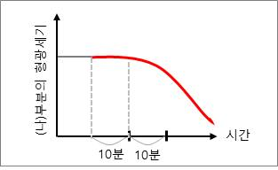
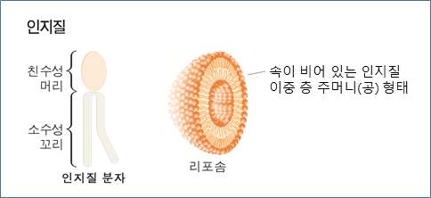
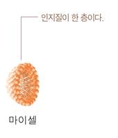

해설 6
단계1. 세포막은 인지질 이중막에 단백질들이 존재하며 인지질과 단백질은 유동적으로 움직일 수 있고 온도의 영향을 받는다. (가)부분의 탈색처리 후 10분간 저온에 보관시에는 막단백질의 움직임은 매우 느리게 일어나거나 거의 일어나지 않을 것이다. 생체 온도인 37°C로 옮긴 이후부터 형광이 탈색된 막단백질이 점차 (나)구역으로 이동할 수 있을 것이다. 따라서 (나)구역의 형광세기는 탈색 10분 이후부터 감소하는 양상을 보일 것이다.

단계2.
(1) 백혈구의 섭취 (대식, 내포) 작용에 의한 현상으로 내포작용은 세포막이 세균을 감싸 주머니 형태로 세포 내부로 들어오는 일종의 세포막 물질 수송 방법이다. 따라서 세포막의 내포작용과 함께 형광표지된 단백질이 함께 세포 내부로 들어와 현미경으로 관찰이 가능할 것이다.
(2) 리소좀에 모이게 될 것이다. 리소좀은 여러 가지 가수분해 효소가 있어 물질의 분해를 담당하며 세포 내부로 들어온 세균과 같은 외부물질, 오래되고 손상된 세포소기관들이나 유기물 등의 세포 물질을 분해하는 세포소기관이다.
단계3. 리포솜은 친수성 머리와 소수성 꼬리로 되어 있는 인지질 2중층의 막으로 된 원형 또는 타원형의 인공 구조물로 속이 비어 있다. 리포솜의 막은 세포막과 같이 유동성을 띠고 있으며 인지질로 이루어진 다른 막과 쉽게 융합할 수 있어서 리포솜 내포의 물질을 세포 내로 쉽게 전달이 가능하다.

